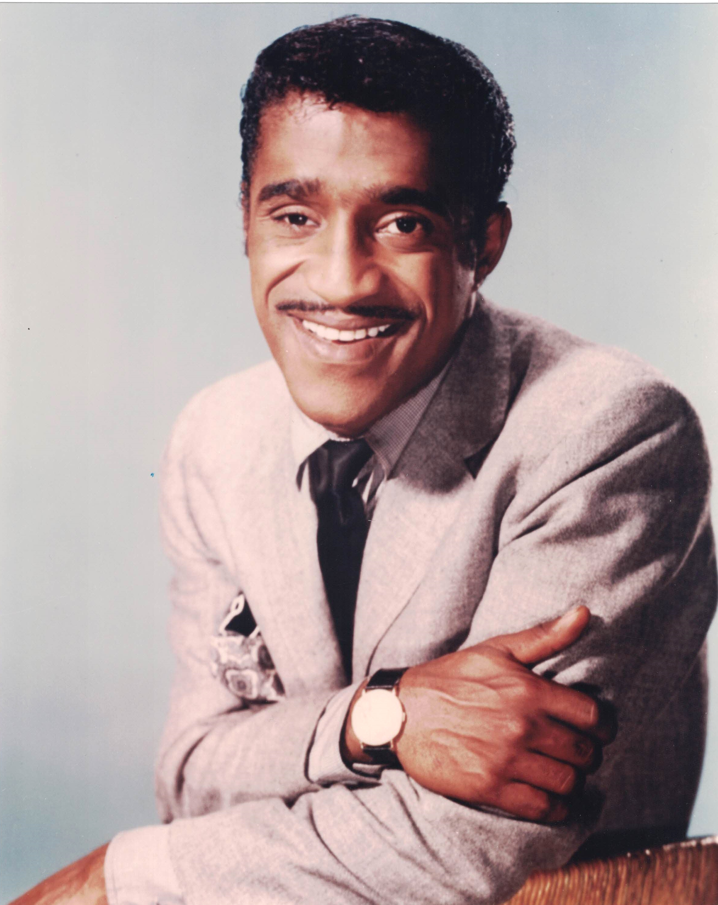

Product No. HEC-0064
$19.99
Shipping: $8.95
Description
8X10 COLOR PHOTOGRAPH
Full Description
Sammy Davis Jr. (Deceased) was an American singer, dancer, actor, comedian, and entertainer whose extraordinary versatility made him one of the most celebrated performers of the 20th century. Born Samuel George Davis Jr. on December 8, 1925, in Harlem, New York, he began performing professionally as a small child with his father and uncle. Davis became known for his talents as a singer, tap dancer, impressionist, musician, and dramatic actor. His popular recordings included "The Candy Man," "I've Gotta Be Me," "What Kind of Fool Am I?," and "Mr. Bojangles." He was also a prominent member of the famous Rat Pack alongside Frank Sinatra, Dean Martin, Peter Lawford, and Joey Bishop. Their nightclub performances and appearances in films such as "Ocean's 11" helped define the glamorous Las Vegas entertainment scene of the early 1960s. Davis appeared in numerous films and television programs, including "Porgy and Bess," "Robin and the 7 Hoods," "Sweet Charity," and "Cannonball Run II." He was also a successful Broadway performer and received acclaim for his work in productions such as "Golden Boy." Throughout his career, Davis broke racial barriers in entertainment and became an important figure in American popular culture. He died on May 16, 1990, at age 64. Sammy Davis Jr.'s music, films, Rat Pack association, and distinctive stage presence continue to make his autographs, photographs, records, and entertainment memorabilia highly desirable among collectors.
Condition
Excellent condition